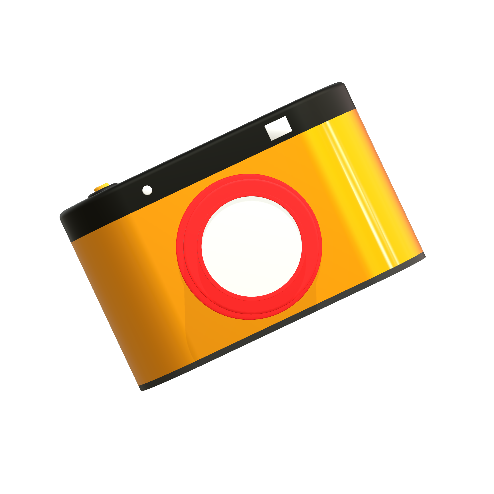

<div class="home-container">
  <h1 *ngIf="moments.length > 0">Veja o que estão compartilhando</h1>
  <div class="search-container">
    <form>
      <mat-icon class="icon-search">search</mat-icon>
      <input
        type="text"
        placeholder="Ou busque por um momento..."
        (input)="searchMoment($event)"
      />
    </form>
  </div>

  <div *ngIf="moments.length > 0; else noMoments">
    <div class="moments-container">
      <mat-card class="moment" *ngFor="let moment of moments">
        
        <h3 class="title-moment">{{ moment.title }}</h3>
        <p class="date">Em: {{ moment.created_at }}</p>
        <p class="comments">Comentários: {{ moment.comments!.length }}</p>
        <div class="details">
          <p>
            <a routerLink="moments/{{ moment.id }}"> Ver detalhes</a>
            <mat-icon class="icon-details">remove_red_eye</mat-icon>
          </p>
        </div>
      </mat-card>
    </div>
  </div>

  <ng-template #noMoments>
    <h1>Não há momentos registrados!</h1>
    
    <h4><a routerLink="./moments/new">Quero compartilhar!</a></h4>
  </ng-template>
</div>
